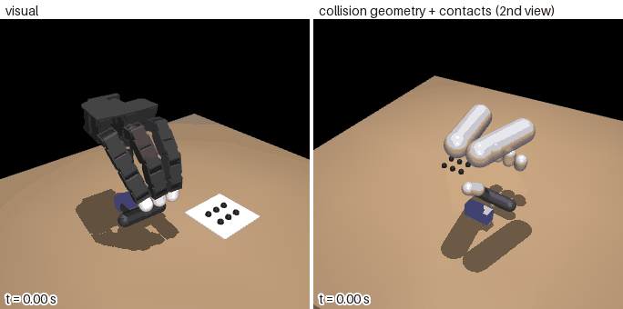
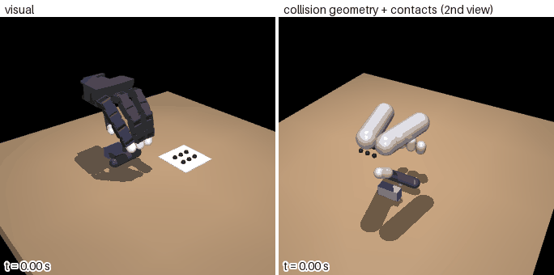

Each plan is replayed in the true contact law. The task counts as done when all six ink pins are pushed flush; success means a metric below 0.01. Left panel: visual geometry. Right panel: collision geometry and contact points (red), from a second view.

Final pin depths (mm, flush = −10): −8.0, −10, −10, −7.1, −9.7, −6.7. Eraser at rest from t = 1.6 s; the remaining 3 s of hand motion does nothing.

Same toss. Five pins flush, pin 5 untouched (0 mm). The eraser ends upside down and sunk into the table the same way.
| Phase | Seconds | Note |
|---|---|---|
| DDP backward pass | 2190 | 2860 passes at ~765 ms each; 22 ms each once OpenBLAS is limited to one thread |
| Lifted IP | 826 | 1772 iterations |
| True-law read-outs | 374 | CPU |
| Line search | 343 | CPU, parallel step sizes |
| Linearization | 183 | GPU |